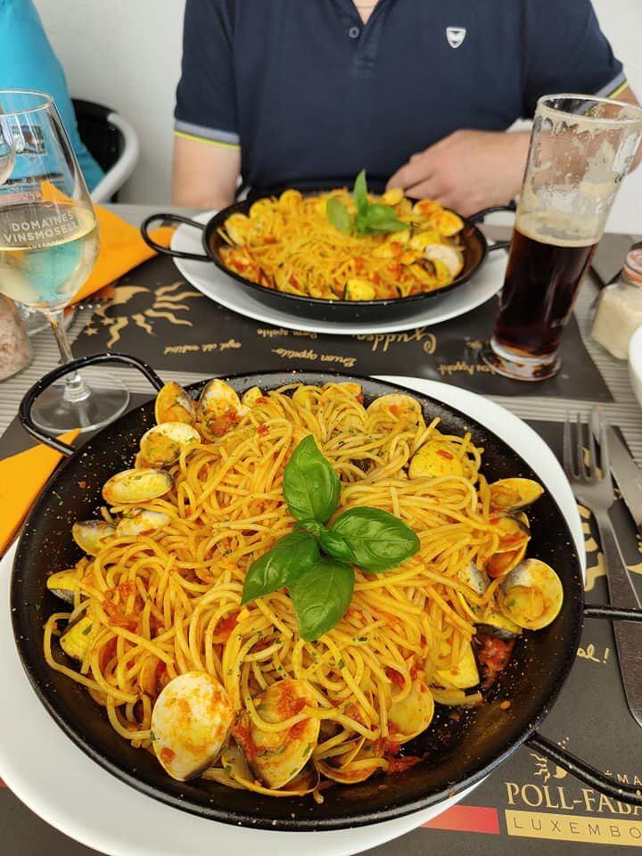
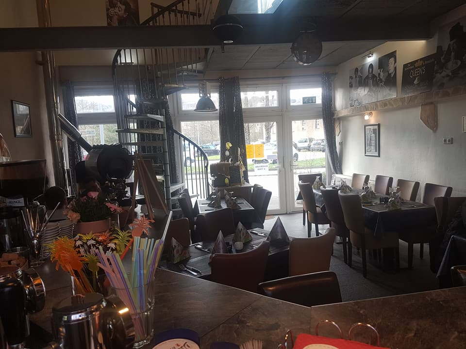
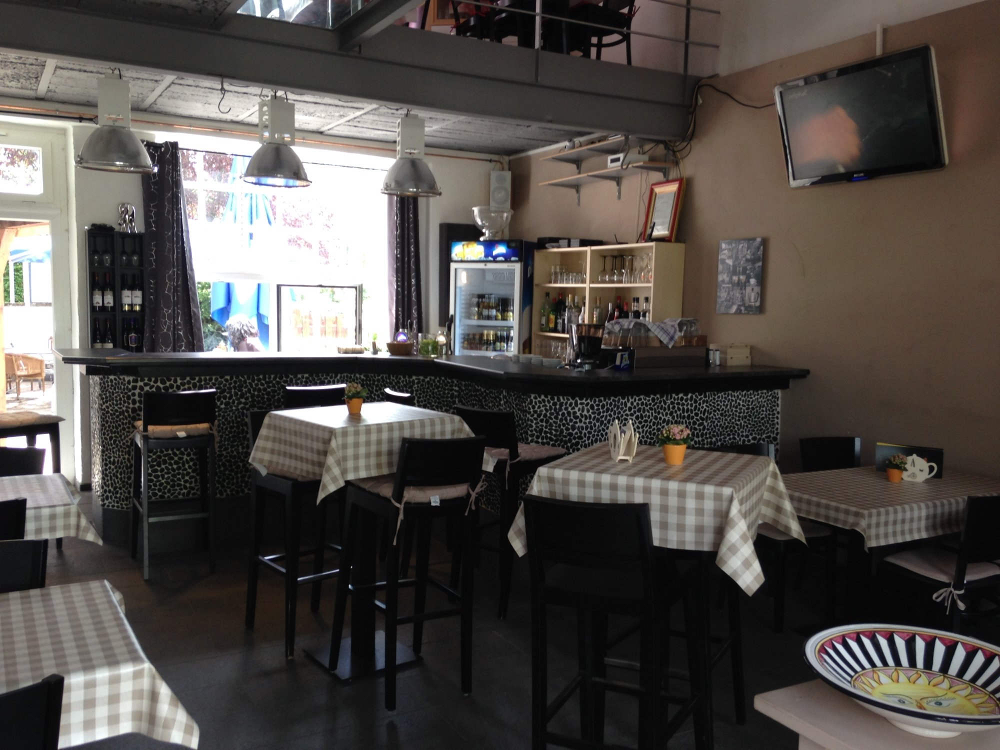
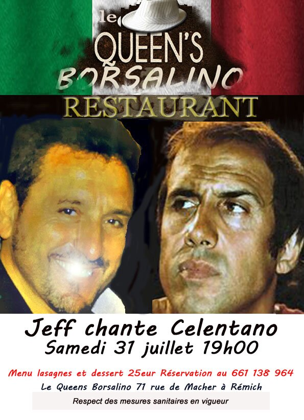
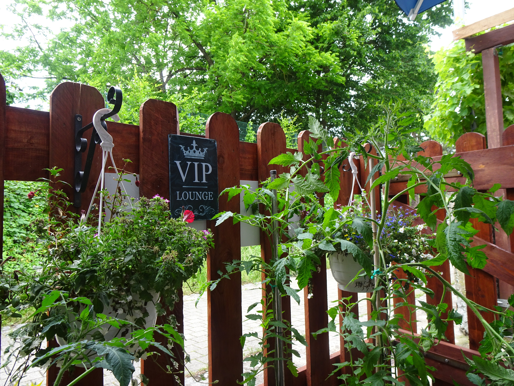
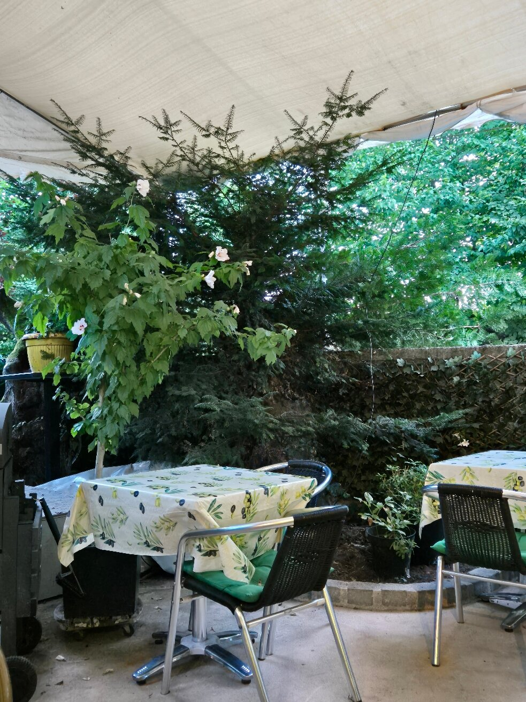

Cuisine italienne & française, produit frais et assiettes réputées XXL. Un accueil chaleureux, une terrasse dans la verdure, des soirées musicales.

« Le chapeau de la reine » : un clin d'œil italien, une table de quartier au grand cœur.
Le Queen's Borsalino, c'est une trattoria familiale posée à Remich, sur la route des vins de la Moselle. On y vient pour l'assiette généreuse, le produit frais et surtout l'accueil : celui des patrons qui connaissent leurs habitués par leur prénom.
Italie et France se croisent dans la cuisine, avec quelques accents luxembourgeois. Et quand la belle saison arrive, la terrasse dans la verdure devient le meilleur salon de la ville — parfois en musique, entre deux soirées à thème.

La salle & sa mezzanine
Le bar, esprit trattoria
L'affiche maison
Le coin jardin
Les portions XXLFermé le lundi · service midi & soir du mardi au dimanche.
Les sources divergent sur les horaires exacts — à confirmer avec l'établissement avant votre visite.